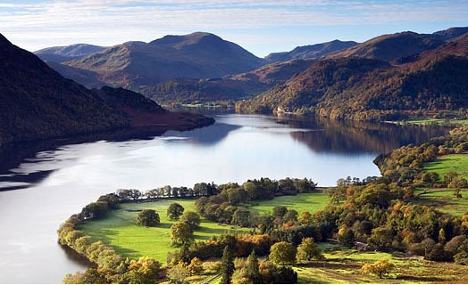

Cumbria District Profile
The below table provides some useful headline figures for businesses looking to invest in Cumbria, and, by using the map opposite, for each of its six district areas.

| Population (2009) | 495,000 |
| Working Age Population (2009) | 304,176 |
| Employment (2009) | 225,179 |
| JSA Claimants (Nov 2009) | 7,485 |
| Mean Full Time Earnings | £25,220 |
| VAT/PAYE Enterprises | 26,375 |
| Available Employment Land (2009) (hectares) | 398.7 |
| Mean House Price (2nd qtr 2010) | £171,445 |
District Profile - Allerdale
Allerdale is a non-metropolitan district of Cumbria with borough status. Its council is based in Workington. Its name derives from the ancient region of Allerdale, represented latterly by the two wards of Cumberland, called Allerdale above Derwent and Allerdale below Derwent.
| Population (2009) | 94,300 |
| Working Age Population (2009) | 87,619 |
| Employment (2009) | 36,665 |
| JSA Claimants (Nov 2009) | 1,677 |
| Mean Full Time Earnings | £27,027 |
| VAT/PAYE Enterprises | 5,025 |
| Available Employment Land (2009) (hectares) | 96.6 |
| Mean House Price (2nd qtr 2010) | £172,370 |
District Profile - Barrow-in-Furness
Barrow-in-Furness is a local government district with borough status. Named after its main town, the borough includes Dalton-in-Furness, Roose and Askam-in-Furness. It is the smallest yet most densely populated borough in Cumbria, with 924 people per square kilometre.
| Population (2009) | 70,900 |
| Working Age Population (2009) | 43,796 |
| Employment (2009) | 30,330 |
| JSA Claimants (Nov 2009) | 1,508 |
| Mean Full Time Earnings | £26,164 |
| VAT/PAYE Enterprises | 2,275 |
| Available Employment Land (2009) (hectares) | 48.9 |
| Mean House Price (2nd qtr 2010) | £112,025 |
District Profile - Carlisle
The City district is named after its biggest settlement but covers a far larger area that includes the towns of Brampton and Longtown and outlying villages including Dalston, Scotby and Wetheral. Carlisle is England's largest city by area, spanning 402 square miles.
| Population (2009) | 104,000 |
| Working Age Population (2009) | 66,287 |
| Employment (2009) | 54,365 |
| JSA Claimants (Nov 2009) | 1,738 |
| Mean Full Time Earnings | £22,414 |
| VAT/PAYE Enterprises | 5,165 |
| Available Employment Land (2009) (hectares) | 88.8 |
| Mean House Price (2nd qtr 2010) | £137,235 |
District Profile - Copeland
Copeland Council was formed in 1974 with the merger of the borough of Whitehaven, Ennerdale Rural District and Millom Rural District. It is based in the picturesque port town of Whitehaven, just a few miles from the Sellafield nuclear site.
| Population (2009) | 69,700 |
| Working Age Population (2009) | 43,805 |
| Employment (2009) | 30,016 |
| JSA Claimants (Nov 2009) | 1,475 |
| Mean Full Time Earnings | £34,290 |
| VAT/PAYE Enterprises | 2,810 |
| Available Employment Land (2009) (hectares) | 98.4 |
| Mean House Price (2nd qtr 2010) | £194,473 |
District Profile - Eden
Named after the River Eden which flows north through the district toward Carlisle, Eden covers an area of 2,156 km², making it the eighth largest district in England and the largest non-unitary district. Its council its based at Penrith, the district's main town.
| Population (2009) | 51,800 |
| Working Age Population (2009) | 31,497 |
| Employment (2009) | 23,850 |
| JSA Claimants (Nov 2009) | 369 |
| Mean Full Time Earnings | £18,955 |
| VAT/PAYE Enterprises | 4,040 |
| Available Employment Land (2009) (hectares) | 38 |
| Mean House Price (2nd qtr 2010) | £209,297 |
District Profile - South Lakeland
The South Lakeland administrative district is based in the town of Kendal. Encompassing area of Westmorland, north Lancashire and west Yorkshire, it is home to two national parks, several bustling urban centres, including Ulverston, and famous tourism hotspots.
| Population (2009) | 103,800 |
| Working Age Population (2009) | 61,172 |
| Employment (2009) | 49,952 |
| JSA Claimants (Nov 2009) | 718 |
| Mean Full Time Earnings | £25,040 |
| VAT/PAYE Enterprises | 7,060 |
| Available Employment Land (2009) (hectares) | 24.4 |
| Mean House Price (2nd qtr 2010) | £245,133 |